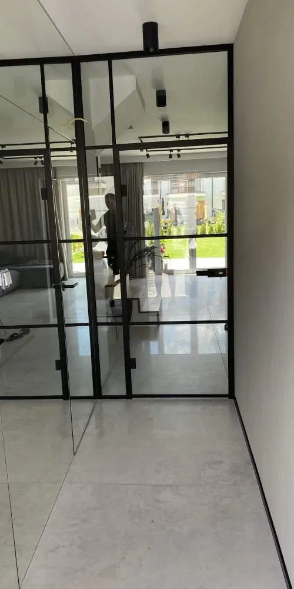
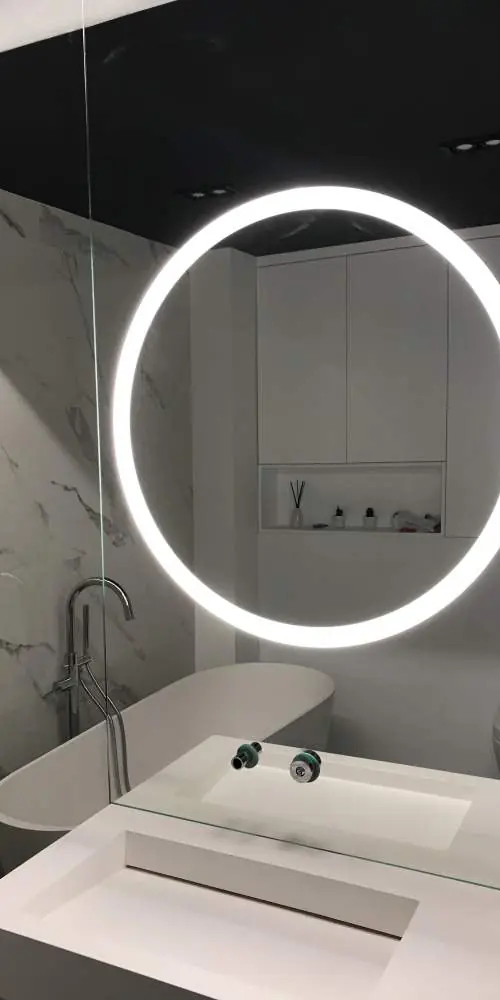
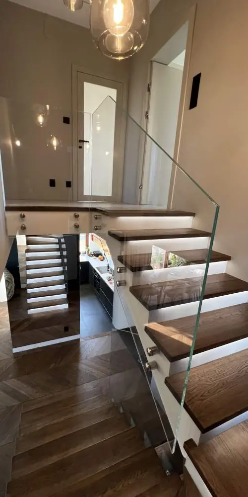
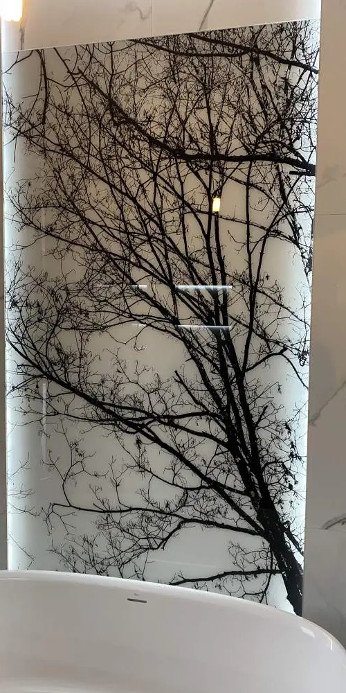
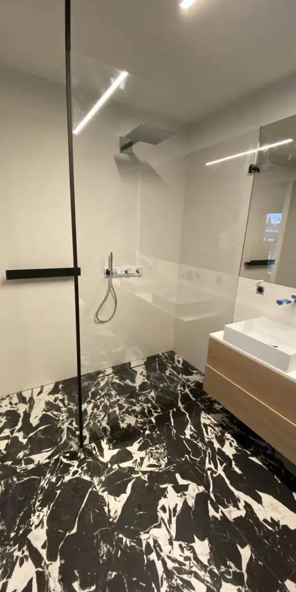

Kabiny prysznicowe
Szkło przezroczyste, optiwhite, satynowe, piaskowane albo z grafiką. Na życzenie powłoka hydrofobowa.
Zapytaj o wycenęKabiny prysznicowe, lustra, drzwi loftowe, zabudowy całoszklane i balustrady. Od pomiaru po montaż.
ul. Instalatorów 23, Warszawapon.-pt. 10:00-17:00





Każdy element robimy na indywidualne zamówienie, pod konkretne wnętrze: do łazienki, kuchni, salonu, na schody i do biura. Przesuń zdjęcia w kafelku, żeby zobaczyć więcej realizacji.
Szkło przezroczyste, optiwhite, satynowe, piaskowane albo z grafiką. Na życzenie powłoka hydrofobowa.
Zapytaj o wycenęHartowane szkło 8 mm, wymiary od 60 do 300 cm, montaż przy płytkach, bez progu.
Zapytaj o wycenęSzkło hartowane na wymiar wanny. Prysznic w wannie bez zalewania podłogi.
Zapytaj o wycenęPrzesuwne lub uchylne. Szynę montujemy do nadproża, sufitu albo ściany.
Zapytaj o wycenęŚcianki działowe, sale konferencyjne, łazienka w sypialni. Opcjonalnie folia, która po włączeniu daje efekt mlecznej szyby.
Zapytaj o wycenęSrebrne, brązowe, grafitowe i optiwhite. Szlif C-kant albo faza 5-30 mm, do 300 cm.
Zapytaj o wycenęHartowane 10 i 12 mm lub laminowane 2 x 6 i 2 x 8 mm. Samonośne albo z wypełnieniem.
Zapytaj o wycenęDowolna grafika na szkle optiwhite lub float 4-6 mm, do 300 cm długości.
Zapytaj o wycenęSzkło lakierowane Lacobel w dowolnym kolorze albo panel z nadrukiem, 4-6 mm, do 300 cm.
Zapytaj o wycenęSzkło float lub optiwhite, dowolne wymiary i kształt, także w zabudowie.
Zapytaj o wycenęZdjęcia z naszych montaży w Warszawie i okolicach. Kliknij zdjęcie, żeby obejrzeć je w całości.
Szkło dobieramy do miejsca i sposobu użytkowania. Przy kabinie liczy się łatwe czyszczenie, przy balustradzie bezpieczeństwo, przy lustrze kolor i krawędź. Jeśli nie wiesz, co wybrać, doradzimy przy wycenie.
Zapytaj o szkłoZajmujemy się całym zleceniem, więc nie musisz szukać osobno szklarza, montażysty i okuć.
Napisz albo zadzwoń. Możesz od razu wysłać zdjęcie miejsca i orientacyjne wymiary.
Mierzymy na miejscu, bo każdy element powstaje pod konkretne wnętrze, ściany i płytki.
Szkło, okucia i wykończenie krawędzi dobieramy do projektu i Twoich oczekiwań.
Montujemy gotowy element i zostawiamy go gotowy do użytku.
Jesteśmy firmą szklarską z Warszawy. Projektujemy, wykonujemy i montujemy elementy ze szkła do domów, biur i lokali.
Pracujemy dla klientów indywidualnych i firm. Robimy kabiny i ścianki prysznicowe, balustrady, zabudowy całoszklane, drzwi loftowe, lustra, panele kuchenne i akwaria. Korzystamy ze szkła hartowanego, laminowanego, optiwhite i float, a każdy projekt dopasowujemy do wnętrza i potrzeb klienta.
Podaj orientacyjne wymiary i dodaj zdjęcie miejsca montażu. Odpiszemy z wyceną albo propozycją terminu pomiaru.
„Projekt Szkło” usługi szklarskie
ul. Instalatorów 23, 02-237 Warszawa
pon.-pt. 10:00-17:00